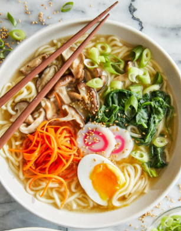
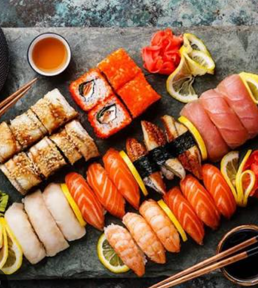
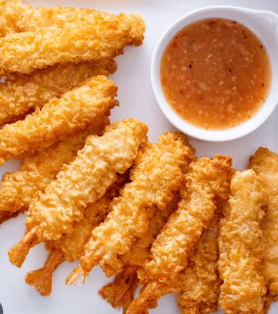
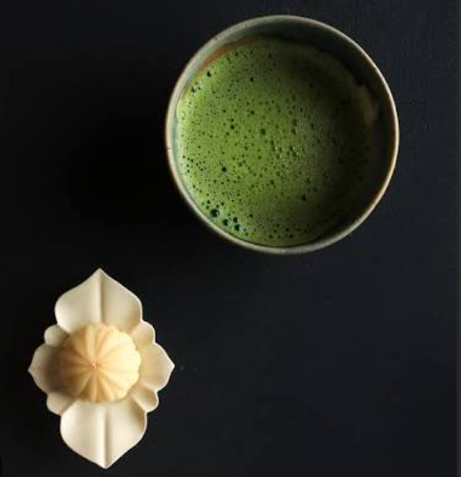
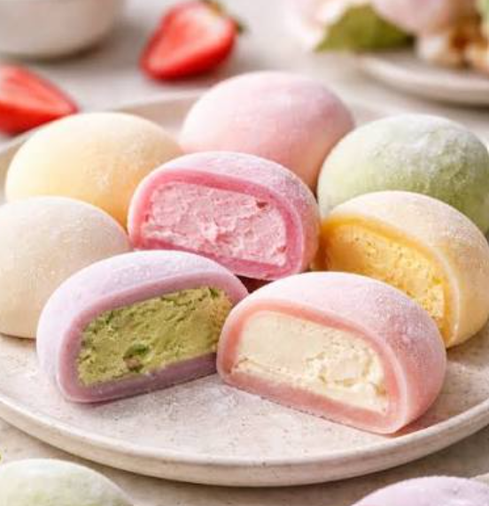
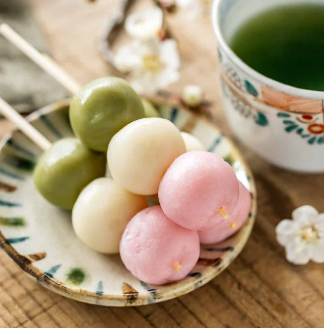

Japanese Cuisine
Japanese food is so much more than just sushi—it's a whole world of comfort food, incredible street eats, and flavors you'll be thinking about long after you leave. Those are ones of the most famous dishes in japan:

Traditional Ramen
A comforting noodle soup served in rich broth, garnished eith sliced meat, green onions, and soft-boiled eggs.

Fresh Sushi & Sashimi
Vinegared rice paired with fresh seafood, showcasting delicate knife skills and natural flavors.

Crispy Tempura
Crispy, golden batter encasing tender seafood or vegetables, showcasing precise frying technique and light, elevated textures.

Matcha & Wagashi
Earthy, whisked japanese green tea served alongside intricate handmade sweets, showcasing subtle seasonal flavors and artistic balance.

Mochi
Chewy pounded rice dough wrapping sweet, delicate fillings, showcasing simple craftsmanship and soft, comforting textures.

Dango
Chewy, skewered rice dumplings glazed with sweet or savory toppings, showcasing vibrant street-food traditions and satisfying textures.
Table Manners:
- Say "Itadakimasu" before eating, "Gochisosama deshita" after.
- Never stick chopsticks vertically in rice or pass food chopstick-to-chopstick.
- Sulrp freely. Slurping noodles and soup shows you're enjoying the meal.
- Hold rice/soup bowls close to your mouth while eating.
- Bring the bill to the exit register to pay. Never tip.